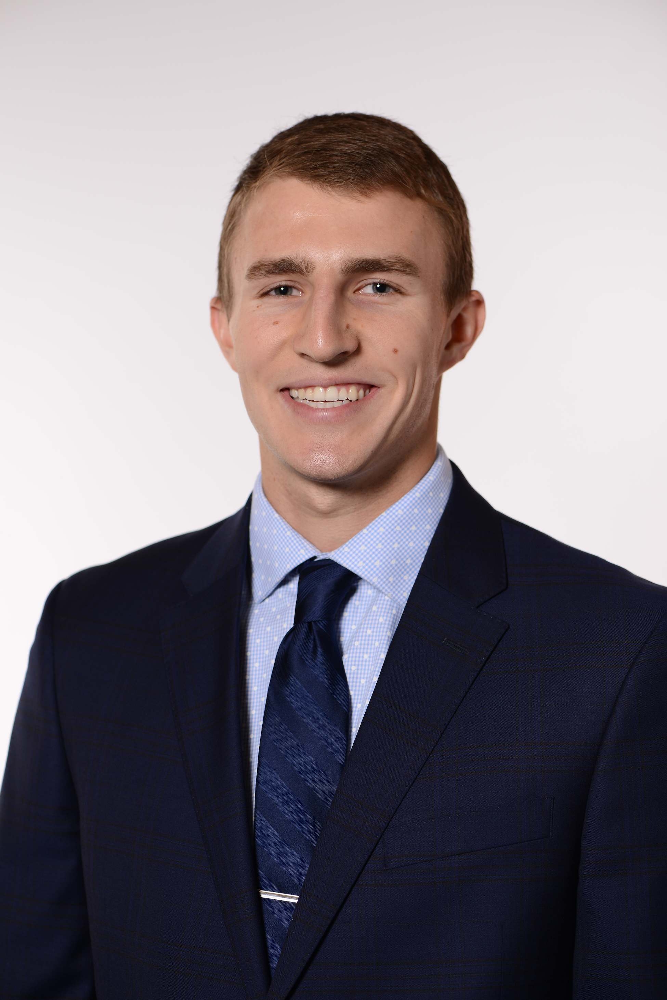

Matthew Krivanek

Contact Information
- Mobile: +1 (330)-635-8493
- Email: matthew.krivanek@ey.com
Professional Background
- Matthew Krivanek is a Staff 2 in the Consulting practice
of Ernst & Young LLP. He graduated in May 2022 from The Ohio
State University with a bachelor’s degree in Industrial and Systems
Engineering and a minor in Business. Currently, Matthew is beginning
his career in the property and casualty insurance division withing the
Technology Solutions Delivery practice.
- Matthew began his career at EY in the fall of 2023, where he spent his
first few months getting certified as a Guidewire Developer Associate
and PolicyCenter Configuration Specialist, as well as completing insurance,
digital, and blockchain badges. He is currently working as a configuration
developer for Ford’s Insurance transformation project. He is working with a
team of developers to configure Origami insurance software to meet Ford’s
desired business objectives.
- Matthew has 5 years of experience working on data projects within excel.
He has 1 year of project experience working with Power BI. He has an educational
background of Java, JavaScript, jQuery, Python, SQL, Access, Lean Six-Sigma, and
MATLAB. He also has 2 years of experience working on the OSU consulting team,
with 1 year of experience being the team leader.
Engagement Experience
- Ford Motor Company (March 2023 – Current)
- Utilized technical skills to configure XML forms, rating programs,
client defined entities, and data entry events.
- Collaborated with EY developers and Origami team to solve defects discovered
in unit testing.
- Utica National Insurance Group (September 2022 – December 2022)
- Updated Requirements Inventory documentation to calculate time for various business activities.
- Verified features required for system update by comparing EY capabilities to Utica desired requirements, utilizing pivot tables.
Certifications
- Guidewire Developer Associate Certification
- Guidewire PolicyCenter Configuration Specialist